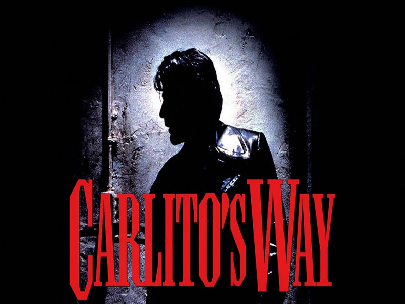
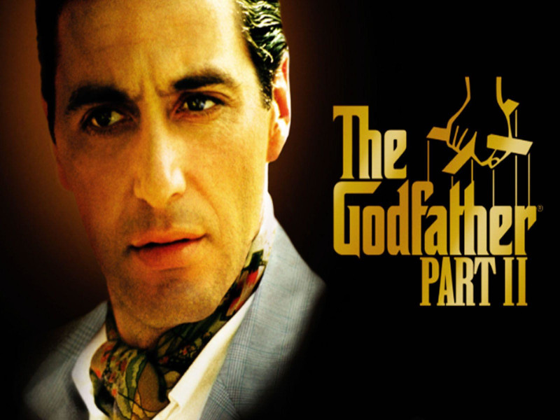

Al Pachino plays Carlito Brigante, a career criminal who has just served 5 years of a 30 year sentence. Plans to turn his life around and get away from what made him go to prison in the first place. Little did he know of the events that have yet to occur. This movie portrays the classic story of a New York gangster who gets involved in a world you can't just walk away from. A story of love, violance, and sorrow, Carlitos Way is sure to draw your attention. Al Pachino also does a great New York accent and plays this role to a key as always.
One of my favorites in Al Pachinos collection is the well known movie, Scarface. Tony Montana played by Al Pachino who consideres himself a "political refugee from Cuba" delves into a life of crime in need of money. Bringing a new meaning to starting from rock bottom and becoming one of the biggest crime lords in all of Miami. A story about how the quest for money, power, and respect can be a long and lonesome road of betrayal, in most cases resulting not in your favor.
The second installation of the godfather trilogy, Al Pachino who plays Michael Corleone a powerful successor to the role of godfather within the Corleone family. A story of two generations, portrays how Michael Corleone expands and defends the family business in the 1950's. In this process he becomes more of a ruthless and isolated leader in order to achieve his goals for the family. Set a day aside, grab some popcorn, and be prepared for a long powerful story of respect, betrayal, and love.
